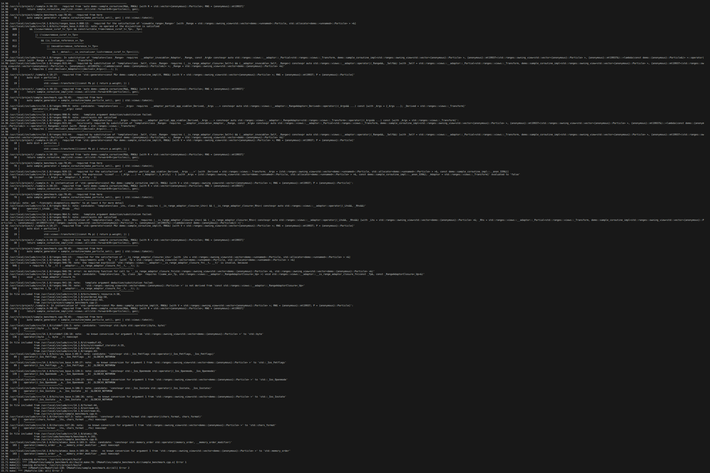
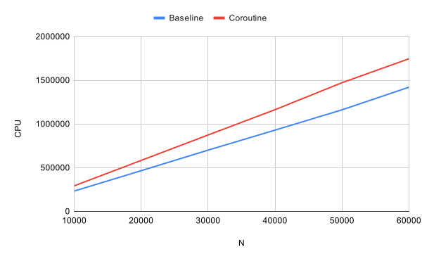
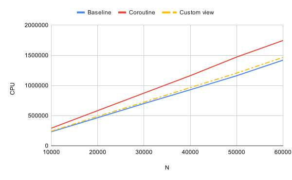
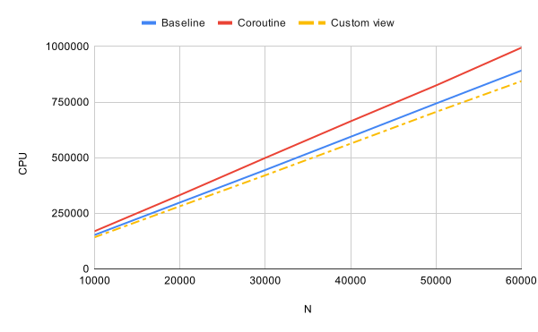

About me 🇦🇷
Robotics Software Engineer
(2020-present)

Repository Maintainer

Talk Overview
- Brief introduction to Particle Filters
- Brief mention to the C++ Ranges library
- Implementation walkthrough of a Particle Filter using C++23
- Practical recommendations and remarks
Bayesian Filters
Algorithms used to estimate the internal state of a dynamical system given noisy observations and random perturbations in the system itself.

Particle Filters

BELIEF - Represented by a set of particles
PARTICLE - A single hyphotesis of the state of the system with an associated weight
- Prediction
- Compute new states for each particle (transition model)
- Update
- Compute weights for each particle (observation model)
- Resample
- Duplicate particles with high weights
- Eliminate particles with low weights
Monte Carlo Localization (MCL)
STATE - Position and orientation of the robot
TRANSITION - Control commands, odometry, etc.
OBSERVATION - Sensor data (LIDAR, Camera, etc.)
C++ Ranges library
Extension and generalization of the algorithm and iterator libraries.
C++ Ranges library
- Particle sets are ranges
- Particle filters are complex algorithms applied to ranges
The Ranges library provides the tools to write these algorithms in a way that is:
- Easy to read
- Less error-prone
- Easy to reuse
Concepts
Particle Filter Algorithm
The filter function should perform two steps:
- Update states and weights
- Resample
Particle Filter Algorithm
Update states and weights
std::views::transform
Particle Filter Algorithm
Update states and weights
std::ranges::transform
Particle Filter Algorithm
Resample
std::discrete_distribution
Particle Filter Algorithm
Resample
- Generate random samples (with replacement)
- Take N of those samples
- Create a new particle set
Sample View
std::ranges::sample? |
custom view |
| Algorithm (eager) | View (lazy) |
| Fixed size | Infinite |
| Without replacement | With replacement |
| All elements have the same probability | Probability determined by the weights |
Sample View
Definition
Given a particle range and a random number generator (RNG), generate a lazy computed infinite sequence of random samples (with replacement).
Implementation
std::generatorstd::views::generate(C++26)std::views::view_interface
Sample View
std::generator (C++23)
Sample View
Take a range by value?
Sample View
Take a view by value!
Compiler error
Sample View
Use std::views::all to convert any range into a view
Compiler error
Compiler error
Sample View
Use std::ranges::ref_view to iterate over an owning view without moving it
Sample View
Performance comparison
Initialize a vector by taking N samples from a small particle set.
GCC 14.1.0 -std=gnu++23 -O3 -DNDEBUG
Sample View
std::views::generate? (Tier 1 candidate for C++26 Ranges)
Sample View
Design choices


Sample View
std::ranges::view_interface
Sample View
Sample View
Sample View
Deduction guide to construct a sample_view from any range
Sample View
Performance comparison
Initialize a vector by taking N samples from a small particle set.
GCC 14.1.0 -std=gnu++23 -O3 -DNDEBUG (Intel(R) Xeon(R))
Sample View
Initialize a vector by taking N samples from a small particle set.
GCC 14.1.0 -std=gnu++23 -O3 -DNDEBUG (AMD Ryzen 9 5900HX)
Sample View
What do we need to fix?
If C is a range adaptor closure object and R is a range,
these two expressions are equivalent:
C(R)
R | C
Sample View
Sample View
Sample View
std::ranges::range_adaptor_closure (C++23)
Sample View
Recap
sample_view |
A view class that implements the main iteration logic |
sample_closure |
A pipable object that captures configuration arguments and can create a view given a range |
sample |
A function that can create a view or a closure depending on the arguments |
Separate Containers
Other Range Adaptors
Practical recommendations
Practical recommendations
Range-v3 (C++17)
Practical recommendations
Range-v3 (C++17)
https://github.com/Ekumen-OS/beluga

Final remarks
- We can use the STL to implement composable range adaptors for domain specific applications like particle filters.
Final remarks
- We can use the STL to implement composable range adaptors for domain specific applications like particle filters.
- Ranges are useful to implement complex algorithms in a way that's straightforward to write, easy to read, and easy to reuse.